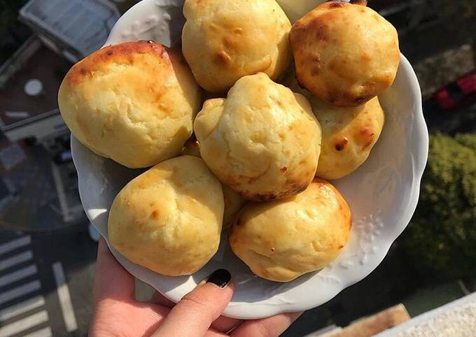

Ravioles sin TACC
El origen de los ravioles es Italiano, específicamente de Cremona donde existen registros de esta receta desde
el año 1243. Su nombre proviene del latín rapum, lo que significa “doblado”, destacando que esta receta es muy
famosa, conocida y consumida a nivel mundial.En siglo XIV, Boccaccio citó los raviolis en su libro ‘El
Decamerón’
Receta Aqui

Fideos caseros sin TACC
Ya en el año 1000 a.C. los chinos preparaban pasta con harina de arroz y de habas. Desde Asia llegaría a
Occidente de la mano de Marco Polo quien, junto a sus tíos Nicolás y Mateo, regresó a Europa en 1271 tras una
expedición por China. Por ello, se atribuye a Marco Polo la introducción de la pasta en Italia, donde
rápidamente se popularizó.
Receta Aqui

Pan de molde sin TACC
Durante milenios, hacer pan, fue parte de la vida doméstica en Estados Unidos. Cerca del año 1890 alrededor del
90% del pan, era hecho en casa.
La noción de pan rebanado o de molde, se le puede asociar a un inventor estadounidense llamado Otto Rohwedder,
quien era un joyero .
Receta Aqui

Chipa Sin TACC
Hace mucho tiempo, incluso antes de la llegada de los españoles, los habitantes de estas tierras ya tejían una
red cultural. Esta los unía a través de las costumbres. En particular de la comida. Una de esas comidas es ahora
uno de los alimentos más tradicionales de nuestra gastronomía.
Receta Aqui

Vizcochuelo sin TACC
Al bizcochuelo (de sabor dulce) se le llama en la mayoría de países hispanohablantes con una palabra derivada
del inglés («cake»); de ahí que se le denomine: «queque», «quey», «keke», etc. La excepciones serían Argentina.
Receta Aqui